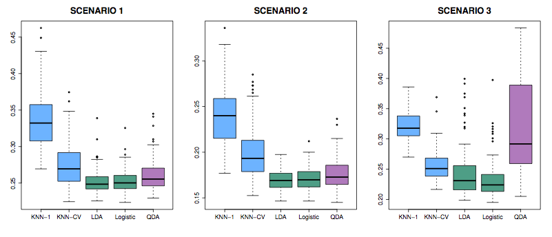
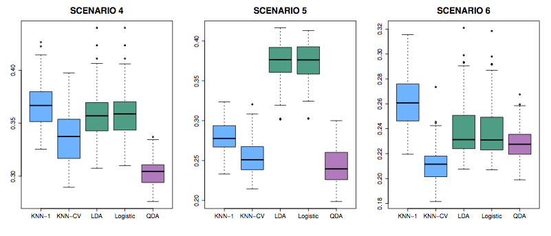

Topic 9 Error test rates on various classifiers
knitr::include_graphics("Images/Chapter-4/4.10.png")

Figure 9.1: Figure 4.10 from ISL
Scenarios: In all, class means are different.
- Each class is two uncorrelated Gaussian random vars.
- Both classes had a correlation of \(-0.5\)
- Uncorrelated, like (1), but the distribution is t(df=?): long tailed to right.
knitr::include_graphics("Images/Chapter-4/4.11.png")

Figure 9.2: Figure 4.11 from ISL
- Like (2), but one class has \(\rho = 0.5\) and the other \(\rho = -0.5\)
- A nonlinear predictor with \(X_1^2\), \(X_2^2\), \(X_1 \times X_2\) giving a quadratic decision boundary
- A decision boundary more complicated than a quadratic.